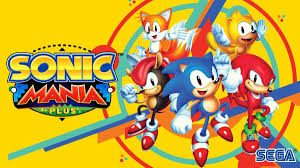

Los videojuegos de plataformas son un género donde los jugadores controlan un personaje que debe avanzar
a través de niveles superando obstáculos como saltos, enemigos y trampas.
Suelen centrarse en la precisión de los movimientos, exploración y recolección de objetos.
Pueden tener una vista en 2D (horizontal o vertical) o en 3D, con diferentes niveles de dificultad y
mecánicas únicas. Ejemplos icónicos incluyen Super Mario Bros., Sonic the Hedgehog y Crash Bandicoot.
Super Mario Odissey
Super Mario Odyssey es un juego de aventuras y plataformas en 3D donde Mario viaja por diversos reinos
para rescatar a la Princesa Peach de Bowser. Acompañado por Cappy, un sombrero viviente, Mario puede poseer enemigos
y objetos para superar desafíos. Destaca por sus mundos abiertos, exploración libre y una jugabilidad innovadora y creativa.
CLP$ 49.900

Sonic Mania
Sonic Mania es un videojuego de plataformas 2D que homenajea los clásicos de la saga de Sonic the Hedgehog.
Desarrollado por Christian Whitehead, Headcannon y PagodaWest Games, y publicado por Sega, fue lanzado en 2017.
El juego presenta niveles rediseñados de los juegos originales de Sonic, como Sonic the Hedgehog 1, 2, 3 y Sonic & Knuckles,
así como nuevos escenarios. Los jugadores controlan a Sonic, Tails y Knuckles mientras luchan contra el malvado Dr. Robotnik
en su intento por detener sus planes. Con gráficos retro, música inspirada en la era de 16 bits y jugabilidad clásica,
Sonic Mania recibió críticas positivas por su fidelidad a los juegos originales y su excelente diseño.